Next: 3.4.3 Second variation
Up: 3.4 Variational approach to
Previous: 3.4.1 Preliminaries
Contents
Index
3.4.2 First variation
We want to compute and analyze the first variation
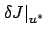
of the cost functional  at the optimal control function
at the optimal control function  . To do this, in view of the definition (1.33), we must isolate the first-order terms with respect to
. To do this, in view of the definition (1.33), we must isolate the first-order terms with respect to  in the cost difference between the perturbed control (3.24) and the optimal control
:
in the cost difference between the perturbed control (3.24) and the optimal control
:
The formula (3.30) suggests regarding the difference
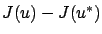
as being composed of three distinct terms, which we now inspect in more detail.
We will let 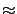
denote equality up to
terms of order  . For the terminal cost, we have
. For the terminal cost, we have
For the Hamiltonian, omitting the  -arguments inside
-arguments inside  and
and  for brevity, we have
for brevity, we have
As for the inner product
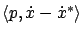
, we use integration by parts as we did several times in calculus of variations:
where we used the fact that
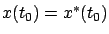
. Combining the formulas (3.30)-(3.34), we
readily see that the first variation is given by
where  is related to
via the differential equation (3.27)
with the zero initial condition.
is related to
via the differential equation (3.27)
with the zero initial condition.
The familiar first-order necessary condition for optimality
(from Section 1.3.2) says that we must have
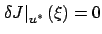
for all
.
This condition is true for every function
, but becomes
particularly revealing if we make a special choice of
.
Namely, let
be
the solution of the differential equation
satisfying the boundary condition
Note that this boundary condition specifies the value of
at
the end of the interval ![$ [t_0,t_1]$](img803.gif) , i.e., it is a final (or terminal)
condition rather than an initial condition. In case of no terminal
cost we treat
, i.e., it is a final (or terminal)
condition rather than an initial condition. In case of no terminal
cost we treat  as being equal to 0, which corresponds to
as being equal to 0, which corresponds to
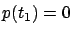
. We label the function
defined
by (3.36) and (3.37) as  from now on, to
reflect the fact that it is associated with the optimal
trajectory. We also extend the notation
to mean evaluation
along the optimal trajectory with
from now on, to
reflect the fact that it is associated with the optimal
trajectory. We also extend the notation
to mean evaluation
along the optimal trajectory with 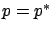
, so that, for example,
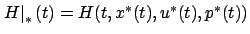
. Setting
and
using the equations (3.36) and (3.37) to simplify
the right-hand side of (3.35), we are left with
for all
.
We know from Lemma 2.13.3 that this implies
 or, in more detail,
or, in more detail,
The meaning of this condition is that the Hamiltonian has a stationary point
as a function
of
along the optimal trajectory. More precisely,
the function
 has a stationary point at
has a stationary point at  for all
. This is just a reformulation of the
property already discussed in Section 2.4.1 in the context
of calculus of variations.
for all
. This is just a reformulation of the
property already discussed in Section 2.4.1 in the context
of calculus of variations.
In light of the definition (3.29) of the Hamiltonian,
we can rewrite
our control system (3.18) more compactly
as
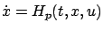
. Thus the joint
evolution of  and
is governed by the system
and
is governed by the system
which the reader will recognize as the system of Hamilton's
canonical equations (2.30) from
Section 2.4.1. Let us examine the differential
equation for
in (3.40) in more detail. We can
expand it with the help of (3.29) as
where we recall that 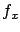
is the Jacobian matrix of  with respect to
. This is a linear time-varying system of the form
with respect to
. This is a linear time-varying system of the form
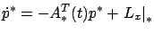
where
 is the same as in
the differential equation (3.28) derived earlier for the
first-order state perturbation
. Two linear systems
is the same as in
the differential equation (3.28) derived earlier for the
first-order state perturbation
. Two linear systems 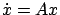
and
 are said to be adjoint
to each other, and for this reason
is called the adjoint
vector; the system-theoretic significance of this concept will
become clearer in Section 4.2.8. Note also that we can think of
as acting on the
state or, more precisely, on the state velocity vector, since it
always appears inside inner products such as
are said to be adjoint
to each other, and for this reason
is called the adjoint
vector; the system-theoretic significance of this concept will
become clearer in Section 4.2.8. Note also that we can think of
as acting on the
state or, more precisely, on the state velocity vector, since it
always appears inside inner products such as
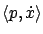
;
for this reason,
is also called the costate (this
notion will be further explored in
Section 7.1).
The purpose of the next two exercises is to recover earlier
conditions from calculus of variations, namely, the Euler-Lagrange equation
and the Lagrange multiplier condition (for multiple degrees of
freedom and several constraints) from the preliminary necessary
conditions for optimality derived so far, expressed by the
existence of an adjoint vector
satisfying (3.39)
and (3.40).
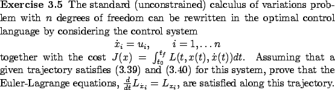
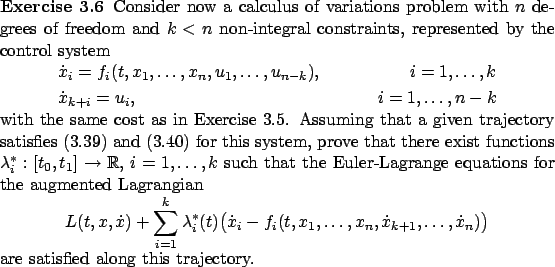
We caution the reader that the transition between the Hamiltonian and the Lagrangian requires some care, especially in the context of Exercise 3.6. The Lagrangian
explicitly depends on  (and the partial derivatives
(and the partial derivatives
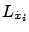
appear in the Euler-Lagrange
equations), whereas the Hamiltonian should
not (it should be a function of
,
,
, and
). The
differential equations can be used to put  into the right form. A consequence
of this, in Exercise 3.6, is that
will appear inside
in several
different places.
The Lagrange multipliers
into the right form. A consequence
of this, in Exercise 3.6, is that
will appear inside
in several
different places.
The Lagrange multipliers
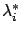
are related to the components of the adjoint vector
, but they are not the same.
Next: 3.4.3 Second variation
Up: 3.4 Variational approach to
Previous: 3.4.1 Preliminaries
Contents
Index
Daniel
2010-12-20